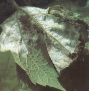
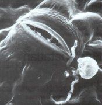
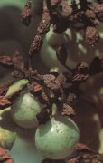
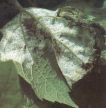
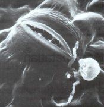

| - Kontakt készítményekkel: -Felszívódó szerekkel: |
  |
Szőlőperonoszpóra
Plasmopara viticola
Az egyik legnagyobb kárt okozó növénybetegség, amely virágot, bogyót, levelet egyaránt megtámad. A fertőzés nyomán a levelek asszimilációs felülete csökken, a virágok, bogyók lehullanak, a bor minősége csökken. A következő év termését is veszélyezteti, mert a fás részek nem érnek be, elfagynak. A gomba a lehullott beteg növényi részeken telel át. Tavasszal, amikor a hőmérséklet nem süllyed 11 °C alá és 10 mm csapadék hullik, az elsődleges fertőzés bekövetkezhet. A másodlagos fertőzéshez már erős harmat (2 óra vízhártya) vagy kisebb eső is elegendő.
Védekezés:
| - Kontakt készítményekkel: -Felszívódó szerekkel: |
  |